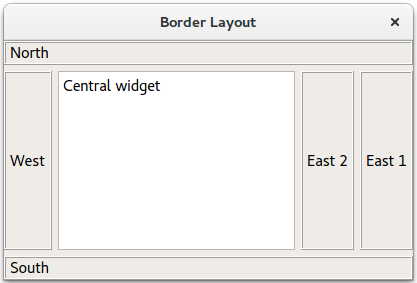

Border Layout Example
Shows how to arrange child widgets along a border.
Border Layout implements a layout that arranges child widgets to surround the main area.

The constructor of the Window class creates a QTextBrowser object, to which a BorderLayout named layout is added. The declaration of the BorderLayout class is quoted at the end of this document.
Window::Window() { QTextBrowser *centralWidget = new QTextBrowser; centralWidget->setPlainText(tr("Central widget")); BorderLayout *layout = new BorderLayout;
Several labeled widgets are added to layout with the orientation Center, North, West, East 1, East 2, and South.
layout->addWidget(centralWidget, BorderLayout::Center);
layout->addWidget(createLabel("North"), BorderLayout::North);
layout->addWidget(createLabel("West"), BorderLayout::West);
layout->addWidget(createLabel("East 1"), BorderLayout::East);
layout->addWidget(createLabel("East 2") , BorderLayout::East);
layout->addWidget(createLabel("South"), BorderLayout::South);
setLayout(layout);
setWindowTitle(tr("Border Layout"));
createLabel() in class Window sets the text of the labeled widgets and the style.
QLabel *Window::createLabel(const QString &text) { QLabel *label = new QLabel(text); label->setFrameStyle(QFrame::Box | QFrame::Raised); return label; }
Class BorderLayout contains all the utilitarian functions for formatting the widgets it contains.
class BorderLayout : public QLayout { public: enum Position { West, North, South, East, Center }; explicit BorderLayout(QWidget *parent, const QMargins &margins = QMargins(), int spacing = -1); BorderLayout(int spacing = -1); ~BorderLayout(); void addItem(QLayoutItem *item) override; void addWidget(QWidget *widget, Position position); Qt::Orientations expandingDirections() const override; bool hasHeightForWidth() const override; int count() const override; QLayoutItem *itemAt(int index) const override; QSize minimumSize() const override; void setGeometry(const QRect &rect) override; QSize sizeHint() const override; QLayoutItem *takeAt(int index) override; void add(QLayoutItem *item, Position position); private: struct ItemWrapper { ItemWrapper(QLayoutItem *i, Position p) { item = i; position = p; } QLayoutItem *item; Position position; }; enum SizeType { MinimumSize, SizeHint }; QSize calculateSize(SizeType sizeType) const; QList<ItemWrapper *> list; };
For more information, visit the Layout Management page.
Running the Example
To run the example from Qt Creator, open the Welcome mode and select the example from Examples. For more information, visit Building and Running an Example.